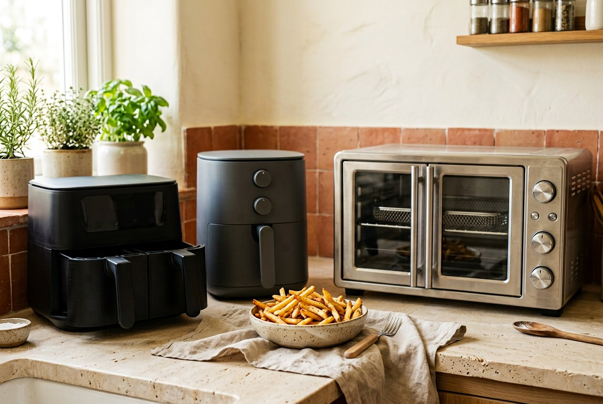

As an Amazon Associate I earn from qualifying purchases. Links marked (paid link) are Amazon affiliate links — if you buy through them, we may earn a commission at no extra cost to you.
How we disclose
A countertop oven that air-fries. The trade-off is counter permanence and footprint: this is a 26-quart French-door oven at 16.9 inches deep, not a compact basket fryer.

Illustrative image, generated for this site — not a photograph of the product. No Amazon photography is used anywhere.
Buy it if Households of 4–6 that want one appliance to roast, toast, air-fry and rotisserie
Skip it if 16.9 in of depth plus French-door swing, item weight unstated on listing, and the listing contradicts itself on preset count and accessory count
We do not print the price here — Amazon's Program Policies only permit a site
to show price and availability when Amazon serves the link or the data comes through their API.
The button opens the official listing, tagged with our Associate ID.
Is this the right one for you?
Do you have 16.9 in of depth, plus room for French doors to swing?
Depth is the binding constraint on most counters. Doors pull open in front of the unit.
Will you actually rotisserie?
The spit and fetch tool are part of what you pay for. Unused accessories are still footprint.
Are you willing to leave it in one place?
At 16.9 in deep and 15.8 in wide (with item weight unstated on the listing,), this is a park-it-and-keep-it appliance, not something you lift into a cupboard.
Do you need a preset count you can rely on?
The listing says 24 in one place and 25 in another. If a specific preset matters to you, check the current listing before buying.
The specs that decide it
Every row below is quoted from the official listing. Where the listing
contradicts itself, both numbers appear and the card on the right says so.
Straight off the official listing, read on 2026-11-20. Where the listing does not say,
the cell says so instead of guessing.
French doors open with a single pull; 360° superheated air circulation (Air Frying Technology: True); rotisserie a 6-lb chicken; bake a 12-inch pizza; stainless steel interior & exterior
The listing is inconsistent: the title, Configuration and Product Description say 24 one-touch presets, while the About this item bullet says 25 cooking pre-sets. Both are published here and neither is chosen.
How many accessories are included?
Three figures appear on the same listing: the title says six cooking accessories, the configuration field and product description say 7, and the included-components list names six (rack, bake pan, drip tray, crisper basket, rotisserie spit, fetch tool). The conflict is left visible instead of averaged.
Will a 12-inch pizza fit?
The listing's own About this item bullet says it can bake a 12-inch pizza and rotisserie a 6-lb chicken.
Does it air-fry or is it just a toaster oven?
The listing has an Air Frying Technology field set to True and describes 360° superheated hot air circulation up to 500 °F at 1700 watts. It air-fries using oven-style circulation, not a basket.
What you are actually buying
The listing describes this as Emeril Lagasse 26QT French Door Multi-Function Air Fryer Toaster Oven | Countertop Convection Cooker, 24 One-Touch Preset Options, Extra Large Interior, Six Cooking Accessories Included. That is the current title on
Amazon, quoted exactly rather than paraphrased, so you can match it against the page you land
on. Brand: Emeril Lagasse. Model: 4-00675-02X-VN (prior listing capture noted 4-00675-02, absent from live page).
Where this link actually goes
You clicked a short link to get here, so here is exactly what it opened, when we
last checked it, and what we publish instead.
What you gave us, where it goes, and what we publish. The intended ASIN and the
observed destination are separate rows on purpose: we do not guess what you meant.
Every value on this page traces to one of those two pages.
Associates test status
PENDING — one link per product is clicked inside the enrolled Associate account and confirmed in the tracking report before any traffic is scaled. The requirement that Special Links carry the Associates ID comes from the Program Policies.
What this page will not claim
No price, star rating, review count, sales rank, commission rate or “best” verdict
appears above. Those are left out on purpose: Amazon’s policy governs some of them, and the
rest cannot be confirmed from an official source. Where the listing contradicts itself, both
numbers are printed — and if you want the paper trail, every one is on the
Flagged for Review page.
Two baskets you can watch through the windows, timed to finish together. The question is not whether it fries — it is whether two 3-quart baskets fit the way you actually cook.
Why we picked it It is the only one here that can finish a main and a side at the same moment, which is the single most common weeknight problem air fryers are bought to solve.
Buy it if Cooked-for-two households that want a main and a side done at once
Skip it if Two small baskets instead of one big one; 450 °F max, and the listing's own capacity field says 6 liters